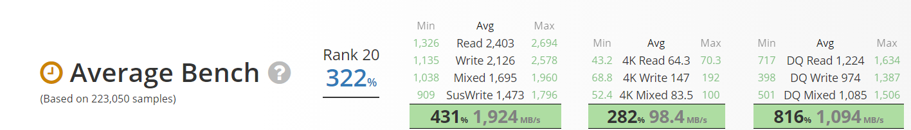

-

$150.99 -
- Specifications
- Manufacturer: Samsung
- Capacity: 1 TB
- Price / GB: $0.160
- Type: SSD
- Cache: 1024 MB
- Form Factor: M.2-2280
- Interface: M.2 (M)
- NVME: Yes
- 
- Features
- - INNOVATIVE V-NAND TECHNOLOGY: Powered by Samsung V-NAND Technology, the 970 EVO Plus SSD’s NVMe interface (PCIe Gen 3.0 x4 NVMe 1.3) offers enhanced bandwidth, low latency, and power efficiency ideal for tech enthusiasts, high end gamers, and 4K & 3D content designers.
- - BREAKTHROUGH READ WRITE SPEEDS: Sequential read and write performance levels of up to 3,500MB/s and 3,300MB/s, respectively; Random Read (4KB, QD32): Up to 600,000 IOPS Random Read. Operating Temperature: 0 - 70 ℃.
- - PERFORMANCE OPTIMIZATION AND DATA SECURITY: Seamless cloning and file transfers with Samsung Magician Software, the ideal SSD management solution for performance optimization and data security with automatic firmware updates.
- - SUPERIOR HEAT DISSIPATION: Samsung’s Dynamic Thermal Guard automatically monitors and maintains optimal operating temperatures to minimize performance drops.
- - 5-YEAR LIMITED WARRANTY: 5-year limited warranty or 600 TBW (Terabytes Written). Power consumption (Idle) - Max. 30 mW Actual power consumption may vary depending on system hardware & configuration. Voltage - 3.3 V ± 5 % Allowable voltage.